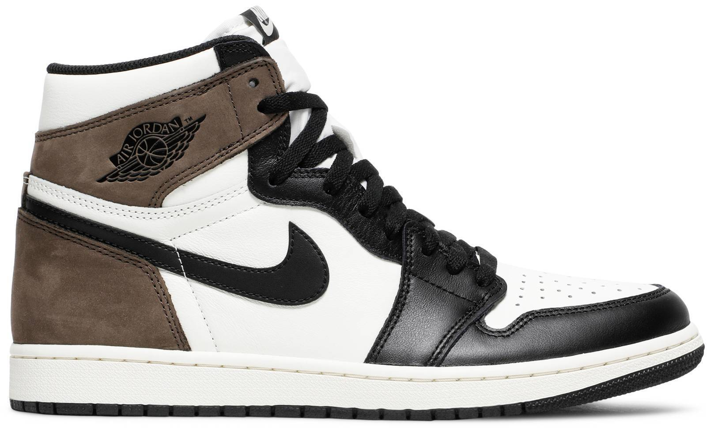
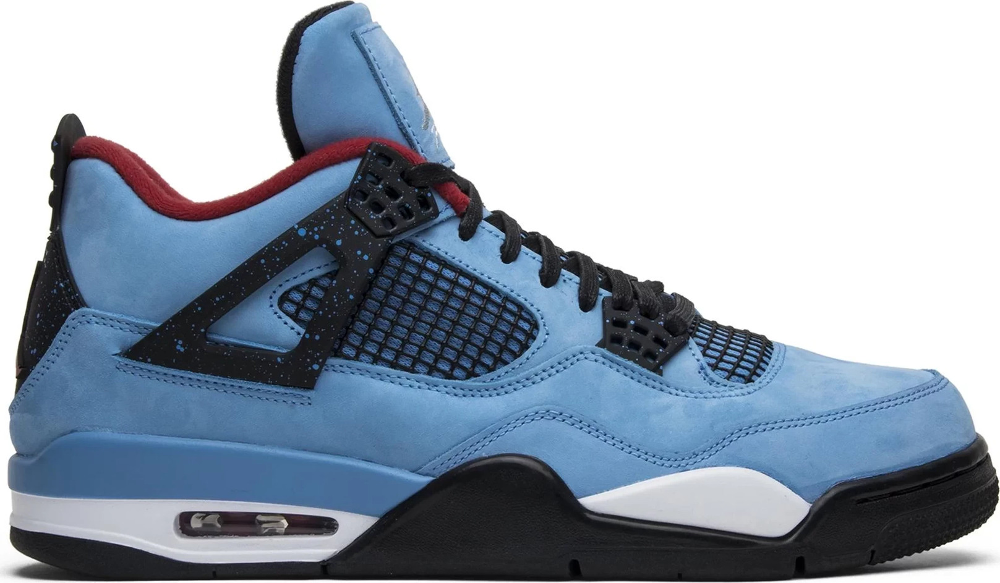
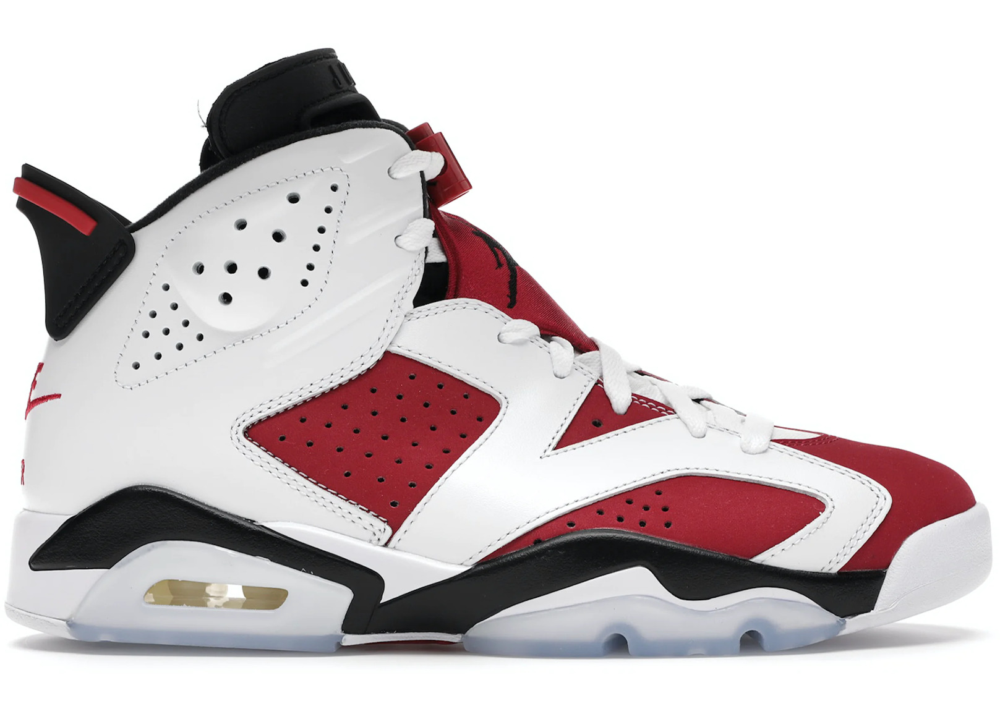
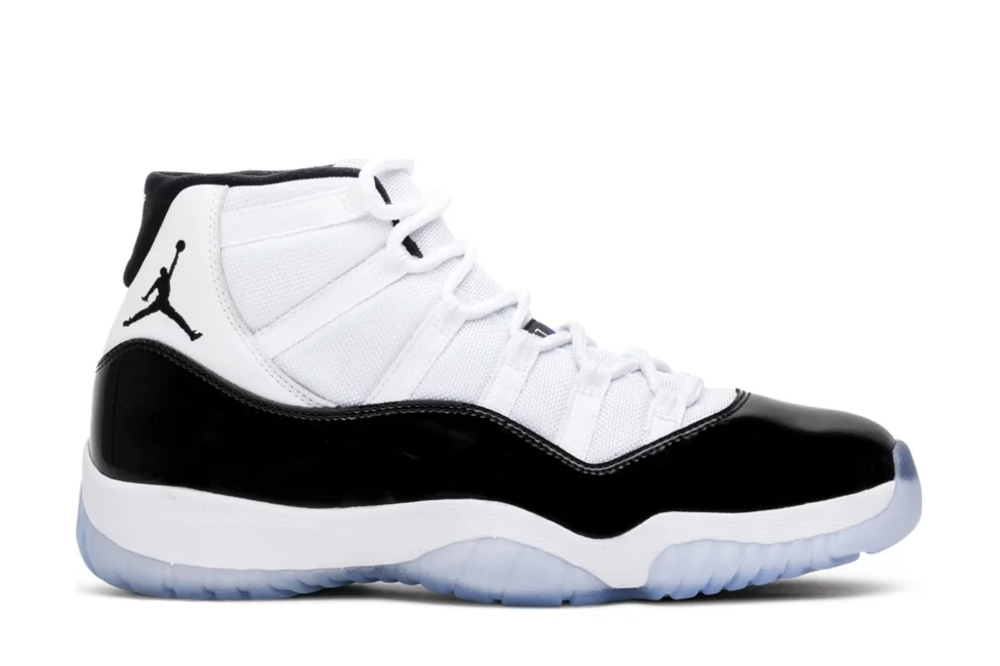
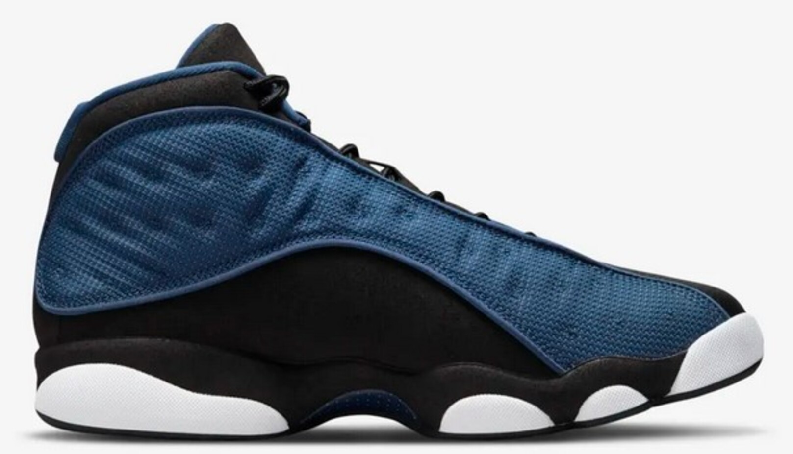

Jordan 1 Dark Mocha

Opis
Air Jordan 1 High Dark Mocha to buty sportowe łączące w sobie nowoczesny design z funkcjonalnością i wygodą. Sneakersy
zostały wykonane z biało-czarnej skóry licowej, która w połączeniu z zamszowym panelem w kolorze mokka nadaje butom
eleganckiego i oryginalnego wyglądu. Charakterystyczne perforacje na bokach buta zapewniają lepszą wentylację stopy
podczas uprawiania sportu, a na języku buta widnieje logo Air Jordan.
Chcesz, by twoje sneakersy wyróżniły się z tłumu, a jednocześnie były delikatne i subtelne? Air Jordan 1 High Dark Mocha
to nie tylko buty z historią, ale przede wszystkim prześliczne sneakersy, o których marzy większość fanów mody.
Biało-czarna kolorystyka w połączeniu z kawowym tylnym panelem tworzy genialny efekt końcowy, obok którego nie można
przejść obojętnie. Buty uzupełnią każdą stylizację, a jednocześnie zadbają o Twój komfort, dzięki poduszce powietrznej
Nike Air.
Marka: Air Jordan
SKU: 555088-105
Jordan 3 Retro Midnight Navy

Opis
Air Jordan 3 Retro "Midnight Navy" to wyjątkowa edycja kultowych butów Jordan 3, która łączy w sobie klasyczną sylwetkę
z nowoczesnymi, eleganckimi akcentami. Te buty Jordan 3, charakteryzują się głębokim, granatowym kolorem, który dodaje
im wyrafinowanego charakteru. Jako buty Jordan 3 Navy, są one doskonałym wyborem dla osób ceniących sobie połączenie
sportowego dziedzictwa z subtelnym stylem, oferując użytkownikom nie tylko wyjątkowy wygląd, ale także niezrównany
komfort i trwałość.
Buty Air Jordan 3 Retro "Midnight Navy" wykonane są z wysokiej jakości materiałów, co gwarantuje długotrwałe użytkowanie
oraz maksymalny komfort. Ich ikoniczna konstrukcja z widoczną jednostką Air w podeszwie zapewnia doskonałą amortyzację,
a unikalne detale, takie jak słynne wzory na skórze i charakterystyczny język, podkreślają unikalność modelu. Kolor
"Midnight Navy" sprawia, że buty te są łatwe do dopasowania do różnorodnych stylizacji, zarówno casualowych, jak i
bardziej formalnych, podkreślając indywidualny styl użytkownika.
Design Air Jordan 3 Retro "Midnight Navy" jest skierowany do osób, które cenią sobie połączenie klasycznej estetyki z
nowoczesnymi rozwiązaniami. Te jasne buty Jordan 3 Navy doskonale wpisują się w zarówno w sportowe, jak i codzienne
zestawy, oferując wygodę i styl na najwyższym poziomie.
Marka: Air Jordan
SKU: CT8532-140 / DM0967-140
Jordan 4 Retro Travis Scott Cactus Jack

Opis
Jordan 4 Retro Travis Scott “Cactus Jack” to wyjątkowe buty będące efektem współpracy pomiędzy marką Jordan Brand a
znanym raperem Travisem Scottem. Te sneakersy to reinterpretacja kultowego modelu Jordan 4, wzbogacona o
charakterystyczne dla Travis'a Scotta detale, tworząc unikalny i pożądany przez fanów produkt.
Ich wyjątkowy design, inspirowany estetyką “Cactus Jack”, nadaje butom autentycznego charakteru i stylu. Elementy takie
jak odwrócone logo Jumpman na języku czy kieszonka na sznurowadła podkreślają kreatywność i indywidualność tego
projektu. Wykonane z najwyższej jakości materiałów, te buty zapewniają nie tylko trwałość, ale także wygodę noszenia
przez cały dzień.
Jordan 4 Retro Travis Scott “Cactus Jack” to nie tylko buty, to także wyraz osobistego stylu i pasji do mody. Doskonale
sprawdzą się zarówno w codziennych, miejskich stylizacjach, jak i podczas wyjątkowych okazji. Dla miłośników mody
streetwear i fanów Travis'a Scotta, te buty są pożądanym elementem kolekcji, dodającym charakteru i prestiżu.
Marka: Air Jordan
SKU: 308497-406
Jordan 6 Retro Carmine

Opis
Buty Air Jordan VI powracają w oryginalnej kolorystyce „Carmine” z widoczną poduszką gazową pod piętą, regulacją
sznurowadeł umożliwiającą ich zaciśnięcie oraz charakterystycznymi półprzezroczystymi elementami na gumowej podeszwie
zewnętrznej. Model Jordan 6 w kolorystyce „Carmine” był pierwszym z serii butów z kolorowymi wstawkami na cholewce.
Michael Jordan stał się częścią koszykarskiej czołówki po tym, jak oddał rzut do kosza, który zapewnił Uniwersytetowi
Karoliny Północnej mistrzowski tytuł. W 1985 r. wyszedł na boisko w butach Air Jordan I. Złamał przy tym zarówno
przepisy ligi, jak i ducha swoich przeciwników oraz zawładnął wyobraźnią fanów na całym świecie.
Marka: Air Jordan
SKU: CT8529-106
Jordan 11 Retro Concord

Opis
Jordan 11 Retro Concord to prawdopodobnie najważniejszy model jeśli chodzi o Jordan 11. Concord jest kolorystyką,
która jako pierwsza ukazała się na tym modelu, w 1995 roku, ale nie była dostępna w sprzedaży. Wydanie jest połączeniem
czerni i bieli, mamy tutaj czarną lakierowaną skórę oraz biały nylon. Na górze kołnierza umieszczono czarnego Jumpmana
skierowanego w przód cholewki, a na zapiętkach numer 45, z którym Michael Jordan grał zaraz po powrocie do ligi NBA w
1995 roku. Takiej wersji nigdy wcześniej nie było w sklepach.
Marka: Air Jordan
SKU: 378037-100
Jordan 13 Retro University Blue

Opis
Air Jordan 13 Retro “Black University Blue” to wyjątkowe połączenie tradycji i nowoczesności, które przemawia do
miłośników streetwearu i sneakerheadów na całym świecie. Wyraziste czarno-niebieskie barwy nadają temu modelowi nie
tylko charakterystyczny wygląd, ale także podkreślają jego ekskluzywny charakter. Sneakersy te, będące limitowanym
wydaniem, szybko stają się pożądanym przedmiotem w kolekcjach entuzjastów obuwia.
Zaprojektowane z myślą o komforcie i trwałości, Air Jordan 13 Retro “Black University Blue” wykorzystują wysokiej
jakości materiały, które zapewniają wytrzymałość nawet przy intensywnym użytkowaniu. Ich ergonomiczna konstrukcja
gwarantuje optymalne dopasowanie do stopy, co jest kluczowe zarówno dla sportowców, jak i dla osób ceniących sobie
komfort na co dzień. Dzięki temu modelowi, użytkownicy mogą cieszyć się nie tylko wygodą, ale także niezawodnością na
każdym kroku.
Air Jordan 13 Retro “Black University Blue” to nie tylko obuwie, to także symbol kultury sneakerowej, który łączy w
sobie ponadczasowy design z nowoczesnymi rozwiązaniami technologicznymi. Ich uniwersalność sprawia, że są one idealnym
wyborem dla każdego, kto szuka obuwia, które będzie pasować do różnorodnych stylizacji i okazji. Czarno-niebieska
kolorystyka, w połączeniu z klasycznym sylwetką, sprawia, że ten model jest rozpoznawalny i ceniony na całym świecie.
Limitowana edycja dodatkowo podnosi ich wartość, czyniąc z Air Jordan 13 Retro “Black University Blue” nie tylko element
garderoby, ale także inwestycję dla kolekcjonerów i miłośników marki.
Marka: Air Jordan
SKU: DJ5982-041